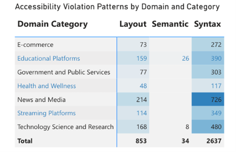

Key Findings

Violations by domain

Most common accessibility violations

Domain × violation category heatmap
Accessibility failures aren’t edge cases — they systematically exclude millions of users.
A real-world accessibility analysis using the AccessGuru dataset
Not all violations are equal. Pages with fewer but more critical issues cause greater harm.
Risk Score: 5×Critical · 4×Serious · 3×Moderate · 2×Minor

Download the complete analysis, explore our code, and start implementing these high-impact fixes today.
Download Report